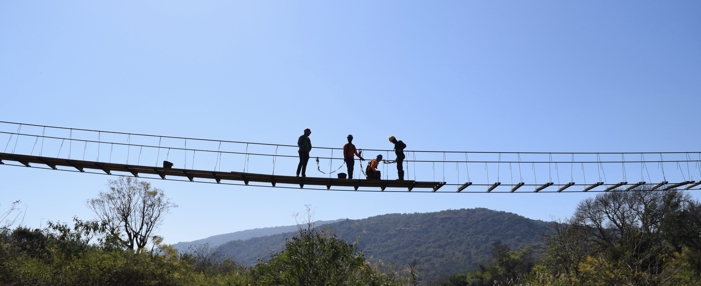

To support development of sustainable systems and infrastructure with underserved communities, local expertise, and global partners.
EIA builds the critical infrastructure people need to prevent death, unlock economic productivity, and change lives. Since 2015, EIA’s Bolivia and Ecuador programs have completed over 120 WASH projects benefiting over 33,000 community partners. The EIA Bridge Program has worked since 2006 with hundreds of students from 40+ universities to design and build over 110 footbridges in 12 countries, serving over 150,000 people.
Having the chance to apply classroom learning to a real-world project so early in our engineering careers was an incredible and invaluable experience - Dan Ndabihayimana
Watching the community use the bridge for the first time was incredibly emotional and fulfilling as I began to realize I had been part of something truly life-changing - Julianna Quondamatteo